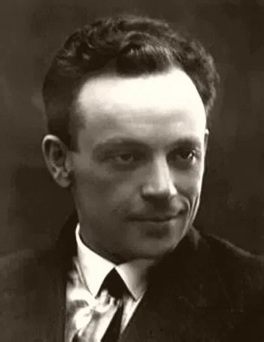

Оказалось, иезуиты давно были Василью Львовичу подозрительны. Так, он слышал, что, для того чтоб развить в питомцах слепое повиновение, они заставляют их сажать в гряды на огороде трости, обыкновенные трости с набалдашниками. И что же? Они заставляют бедняг ежедневно поливать эти трости, словно набалдашник может прорасти. Экие скоты! Общество Иисуса всем, признаться, давно надоело. И тут же Василий Львович, счастливый и беззаботный, вспомнил острое слово Буало. Буало поссорился с отцами иезуитами. Иезуиты прислали к нему для увещания двух своих членов. Буало спрашивает у них, что они за люди. Они отвечают: из общества Иисуса. Тогда Буало спрашивает: Иисуса рождающегося или Иисуса умирающего? Потому что Иисус родился в хлеву средь скотов, а умер средь двух разбойников.